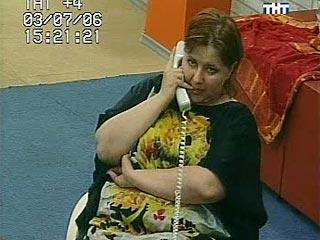

Отчёт о финале

Елена Проклова со стадиона "Poligon"
В финале Кубка колотиловки (Мамин Сибиряк) "Bender Selection" проявил характер и одержал волевую победу над "MO4A HA nEPEnPABE" со счётом 3:2 благодаря хет-трику Ришара Фабре. Таким образом, "бендеровцы" взяли реванш у соперника за поражение в решающем матче третьего розыгрыша турнира - тогда тогда ещё "nEPBAK" отпраздновал триумф в дополнительное время с результатом 1:0. На этот раз команды порадовали 2118 собравшихся на трибунах зрителей атакующим футболом и пятью забитыми мячами.
Причём здесь Славик?До матча думалось, что максимум, на что сподобится тренер МО4А Паули Лампила - 4-5-1 и прессинг с целью задушить наступательное начало оппонента и чудом дотянуть до дополнительного времени. "Мочевинники" действительно выбрали стратегию 4-5-1, однако с первых минут стали играть творчески (!!!), сделав явный акцент на атаку. "Бендер" ответил на это традиционной расстановкой 3-5-2, однако давить по центру почему-то не стал. Погода была пасмурной, но хотя небо заволокло тучами, дул промозглый ветер и пахло прогорклой пищей, соперники подарили всем нам незабываемый спектакль, в котором не было разве что травм, жёлтых и красных карточек, пенальти, незасчитанных голов, бегающих по полю собак и акабов, а также голого мужчины с хуем и надписью "bet365.com" на спине.
Кто кому подмахивалЯ ещё только расчехляла ноутбук и чесала песду указательным пальчиком левой руки, как счёт уже был открыт. На 6-й минуте 32-летний голландский вингер Эдди Маркхорст завершил атаку по правому флангу пушечным ударом в ближний угол к вящей радости Лампилы, который исполнил гопак у бровки. Честно говоря, такое начало шокировало не только всех, но и "бендеровцев". Фаворит очнулся лишь на 14-й минуте, когда провёл первую опасную атаку. Завершал комбинацию Томас Георг Георге, который что есть дури уёб в перекладину. Через четыре минуты Фабре показал партнёру, как надо забивать, чётко дослав пятнистого во всемирную паутинку - 1:1. Кстати, о Фабре. Ни для кого не секрет, что накануне полуфинала КК "Бендер" из-за травмы лишился своего главного голеадора Антона Главина. В такой ситуации любой стал бы пенять на Гинера и слишком сильно накачанный мяч. Любой, но только не "Bender Selection". За два дня до поединка с "Мочей" фаворит тихонечно прикупил 19-летнего французика за 345 с половиной кусков. Не пиздел, что это новый Главин, не обещал, не заявлял. И Фабре доказал, что не зря его взяли в команду и доверили место в "основе". Хет-трик в дебютном матче Кубка молотиловки в 19 лет - это, я вам скажу, надо уметь. Правда, я немного забежала вперёд...
ГарпастумКогда "Бендер" восстановил статус-кво, многие наверняка подумали, что уж сейчас-то экс-"Первак" точно ждёт справедливая расправа. Ан нет - вместо этого на 26-й минуте турецкий снайпер Полат Текеш вернул номинальным гостям преимущество в счёте. На этот раз результативная комбинация началась на левом краю, после чего последовал пас в центр и меткий выстрел абрека с волосатыми руками в нижний угол. Так первый тайм и закончился - 2:1 в пользу "тёмной лошадушки". "Бендер" владел мячом 69 процентов времени, однако никаких дивидендов выжать из этого не смог - до перерыва противники провели по две атаки, причём клиникал финиш "мочи" радовал глаз, ухо и жопу.
Миливое ЧирковичС началом второго тайма фаворит бросился отыгрываться. Забегая вперёд, отметим, что после перерыва "Бендера" имел как минимум пять голевых моментов, в то время как "Моча" исключительно оборонялась, уповая на кинжальный контрвыпад, острый, как ятаган дедушки Измира. Георг Георге вновь проебал стопроцентную возможность для взятия ворот, после чего дважды кряду отличился Фабре, оформивший хет-трик. Вслед за этим моменты увеличить счёт имели Гунтис Винте и Ройс Эйхе, однако и результата 3:2 "селекционерам" хватило для победы. "Моча" же беззубыми действиями во втором тайме немного подпортила общее впечатление от весьма достойной и бесшабашной игры в финале.
Подражая КиселёвуЕсли же подводить итоги, то "Bender Selection" в четвёртый раз завоевал Кубок колотиловки, причём сделал это вполне заслуженно. Несмотря на лёгкий жребий, команда Поля Монтанье ни разу не дала усомниться в своей силе, о чём также говорят удивительная результативность и заслуженный триумф в Трофее Игоря Нетто усилиями Главина. "MO4A HA nEPEnPABE" же хуярилась в финале против заведомо более сильного соперника с открытым забралом, а также вынесла две очень крепкие команды в плей-офф. Именно поэтому дружине Лампилы не стоит вешать нос, ведь и второе место в турнире - достижение очень даже неплохое, учитывая его силу и престиж.
В Израиле ли вы?